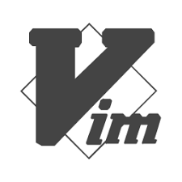
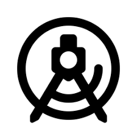

Hi, I'm Yiqin Zhang
I am pursuing a Computer Engineering degree at Boston University, on track to graduate this fall to become a full-stack software developer. I originally came from China. Before starting my graduate studies at BU, I earned a Master's degree in Landscape Architecture and worked as an urban designer and project manager.
EDUCATION

Boston University, Boston MA
Expected Dec 2023 Master of Science in Computer Engineering, GPA: 3.93/4.00Peking University, Beijing, China
Jul 2010 Master of Science in Landscape ArchitectureNorthwest A&F University, Xi’an, China
Jul 2008 Bachelor of Agriculture in Landscape ArchitectureSKILLS


- 
- 
WORK EXPERIENCE
Red Hat, Inc.
May 2022 - Dec 2022- Developed JupyterLab extension turning jupyter notebook to live reveal.js-based presentation via Html/Css/JavaScript.
- Implemented multiple features to enrich interactive live presentations to enhance teaching and learning experience.
- Designed and built JupyterLab extension to create custom templates for slides through Typescript.
- Deployed and tested plugins in Docker containers on Operate First, and manage with OpenShift (Kubernetes platform).
- Generated detailed Jupyter Textbook Docs and Demos to instruct infrastructure setup, features, and implementations.
Boston University
Sep 2021 - Present- Instruct graduate-level courses: Advanced Data Structures and Parallel Programming for High-Performance Computing.
Turenscape Design Institute
Jul 2010 - Jun 2017Project manager, Beijing
- Worked as a project landscape designer and project manager in leading the design team to handle from conceptual design to production drawings
- Played a key role in planning for various scale projects, leading the design directions and providing design solutions to team members from the conceptual design stage to details development
- Experienced in project management and internal team management
INTERESTS

As a software developer, I spend most of my days indoors, but I love to be outside whenever I get the chance. You can find me swimming laps in the pool, hiking through the wilderness, or kayaking down a river. I especially love exploring the beautiful national parks across the US, and I'm always looking for my next adventure. I love to travel a lot, and my all-time favorite city to travel to is Barcelona. The architecture, culture, and food are absolutely incredible. It's hard not to fall in love with the city's unique charm.
When I'm not out and about, I enjoy curling up on the couch and watching my favorite sci-fi and mystery thriller movies and TV shows. I'm also a big fan of sitcoms and stand-up talk shows, Sometimes, when I'm feeling burned out from staring at a screen all day, I'll shut off all electronic devices and immerse myself in Lego building or jigsaw puzzles.

But did you know that I'm also an aspiring chef? That's right, I love experimenting with new recipes and trying out different cuisines. It's a shame that my horticulture skills don't quite match up to my cooking skills, though. Back in college, I majored in landscape architecture, but my green thumb isn't quite there yet. I hate to admit it, but the plants under my care usually don't survive for more than three months. Oops!
PROFESSIONAL GOAL
My professional goal is to become a highly-skilled full-stack engineer proficient in multiple programming languages and frameworks, including front-end, back-end, and database. With a keen interest in technology, I am committed to continuous learning and keeping up-to-date with emerging tools and frameworks, recognizing that the industry is constantly evolving.
Collaborating with talented developers to build scalable and maintainable systems is a key aspiration of mine. I am passionate about creating innovative and intuitive solutions that make a positive impact on people's lives. To achieve this, I plan to master best practices in architecture, testing, and security, ensuring that the software I build is efficient and secure.
As a full-stack engineer, I believe in creating solutions that are not only functional but also easy to use, making the user experience as seamless and enjoyable as possible. I am driven to work collaboratively with individuals from diverse backgrounds and cultures to deliver exceptional results. My ultimate goal is to become a highly respected full-stack engineer with a reputation for producing high-quality software solutions. I aspire to inspire and encourage others to push boundaries and strive for excellence in their careers, using my work as a means to drive positive change in the industry. By achieving my professional goals, I hope to make a significant impact in the world of technology and leave a lasting legacy.
PROJECTS
Cloud and React Based Social Network
- Designed a geo-based photo and video-sharing social network web application through React.JS.
- Implemented features for users to create, browse and search for posts with Google Map API and GeoLocation API.
- Enhanced token-based registration/login/logout flow with React Router v4 and user authentication with JWT.
- Launched a scalable web service in Go to handle posts and deployed to Google Cloud (GAE flex) for better scaling.
- Developed geo-location-based search functions so users can explore nearby posts using ElasticSearch (GCE).
Spring and Hibernate Based Shopping and Ordering System
- Led a team of 3 to build web application based on Spring MVC to fulfill e-commerce product search and listing.
- Achieved security workflow via in-memory and JDBC authentication provided by Spring Security.
- Applied Hibernate as persistence layer framework to produce optimized database operations and management solutions.
- Constructed a Spring Web Flow to perform item ordering and checkout processes.
- Designed an efficient database schema for fast data storage and retrieval using MySQL.
Personalized Events Recommendation Web Service
- Built interactive webpage (Html/Css/JS) for users to search events, update preferences, and view recommendations.
- Developed 3 Tomcat servlets with RESTful APIs to fetch event data from TicketMaster API.
- Established and retrieved user preference and event information through MySQL/MongoDB.
- Improved recommendation precision using content-based recommendation algorithm to match similar inquiries.
- Deployed server to AWS EC2 to handle 150 queries per second tested by Apache JMeter.
Customized News Recommendation Android App
- Designed Instagram-like News app based on Google Component Architectural MVVM Pattern in 4-person team.
- Employed CardStackView(RecyclerView) to facilitate swipe gestures for liking/disliking news.
- Collaborated with team to build Room Database with LiveData & ViewModel to support local cache and offline model.
- Integrated Retrofit and LiveData to collect latest news data from a RESTful endpoint (newsapi.org).